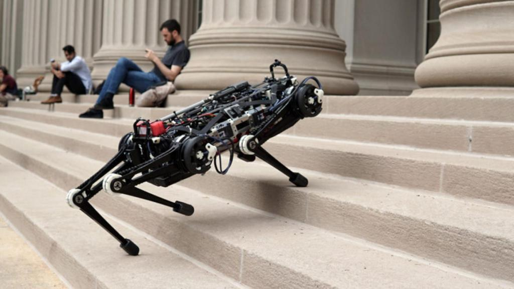
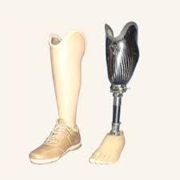
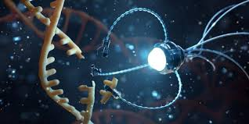
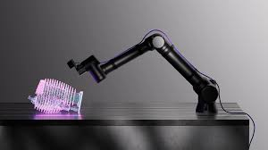
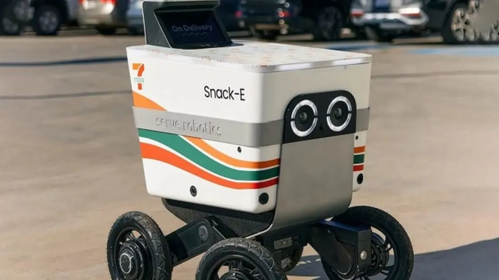
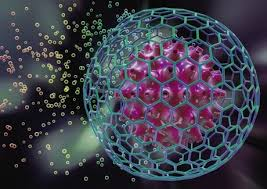

Avances Tecnológicos en Robótica y Salud
Robots que Suben Escaleras
Los robots que pueden subir escaleras han sido un hito en la robótica, especialmente en el ámbito de la asistencia y rescate. Estos robots utilizan un diseño biomimético, inspirado en los movimientos de ciertos animales y humanos. Gracias a sensores avanzados y algoritmos de control, pueden adaptarse a diferentes tipos de escaleras y obstáculos. Esto es fundamental en situaciones de emergencia, donde el acceso a personas atrapadas puede ser crucial. Además, su uso en el hogar podría facilitar la vida a personas con movilidad reducida, permitiendo un entorno más accesible.
Plantillas Especializadas para Prótesis de Piernas
Las prótesis modernas han evolucionado más allá de los modelos tradicionales, incorporando tecnología de punta como las plantillas personalizadas. Estas plantillas están diseñadas utilizando técnicas de escaneo 3D y fabricación aditiva, lo que permite una adaptación precisa a la anatomía del usuario. Además, están fabricadas con materiales ligeros y duraderos que ofrecen soporte y comodidad. Las investigaciones continúan para integrar sensores que puedan proporcionar retroalimentación en tiempo real sobre la presión y el equilibrio, mejorando así la experiencia de los usuarios y su capacidad para realizar actividades cotidianas con mayor facilidad.
Nanotecnología en la Salud
La nanotecnología está revolucionando el diagnóstico y tratamiento de enfermedades. A nivel celular, se están desarrollando nanopartículas que pueden llevar medicamentos específicos a células cancerosas, minimizando el daño a las células sanas. Esto no solo mejora la eficacia del tratamiento, sino que también reduce los efectos secundarios que muchas veces son debilitantes. Además, la nanotecnología se aplica en la creación de dispositivos médicos más pequeños y precisos, como sensores que pueden monitorear condiciones de salud en tiempo real, lo que permite una atención médica más proactiva y personalizada.
Inbolt y Visión 3D
Inbolt es una solución tecnológica que ha transformado la automatización industrial mediante la integración de visión 3D. Esta tecnología permite a los robots reconocer y clasificar objetos en entornos complejos, lo que mejora la eficiencia y precisión en la producción. Con el uso de cámaras y software de procesamiento de imágenes, los robots pueden adaptarse a cambios en la línea de producción, aumentando así la flexibilidad y reduciendo los tiempos de inactividad. Esto tiene un impacto significativo en la logística, permitiendo a las empresas optimizar sus operaciones y reducir costos.
Robots y Drones que Entregan Pedidos
La entrega de pedidos mediante robots y drones está emergiendo como una solución innovadora en el comercio electrónico. Equipados con tecnologías de navegación avanzada, estos dispositivos pueden operar de forma autónoma, eligiendo las rutas más eficientes y evitando obstáculos. La implementación de estos sistemas no solo promete reducir los costos de entrega, sino también disminuir la huella de carbono asociada al transporte. A medida que las regulaciones se adaptan, se prevé que estas tecnologías se conviertan en una parte esencial de la infraestructura urbana, facilitando un acceso más rápido y eficiente a productos y servicios.
Células Madre y Diabetes Tipo 1
La investigación en células madre ofrece nuevas esperanzas para el tratamiento de la diabetes tipo 1, una enfermedad crónica que afecta a millones de personas en todo el mundo. Los científicos están explorando cómo las células madre pueden ser utilizadas para regenerar las células beta del páncreas, responsables de la producción de insulina. Este enfoque no solo podría proporcionar un tratamiento más efectivo, sino que también podría llevar a una cura definitiva, eliminando la necesidad de administración diaria de insulina. Aunque aún está en fases de investigación, los resultados iniciales son prometedores y podrían cambiar radicalmente la vida de quienes padecen esta enfermedad.
